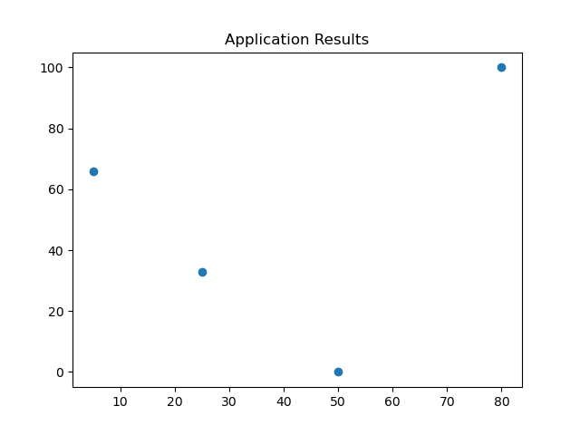
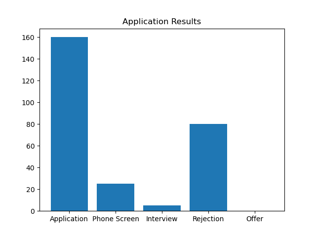
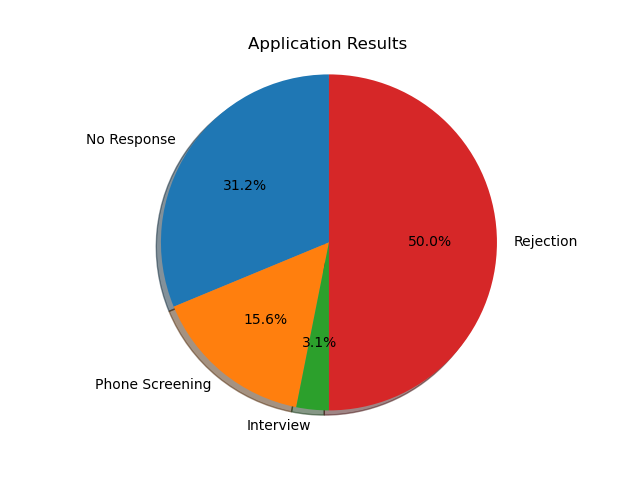
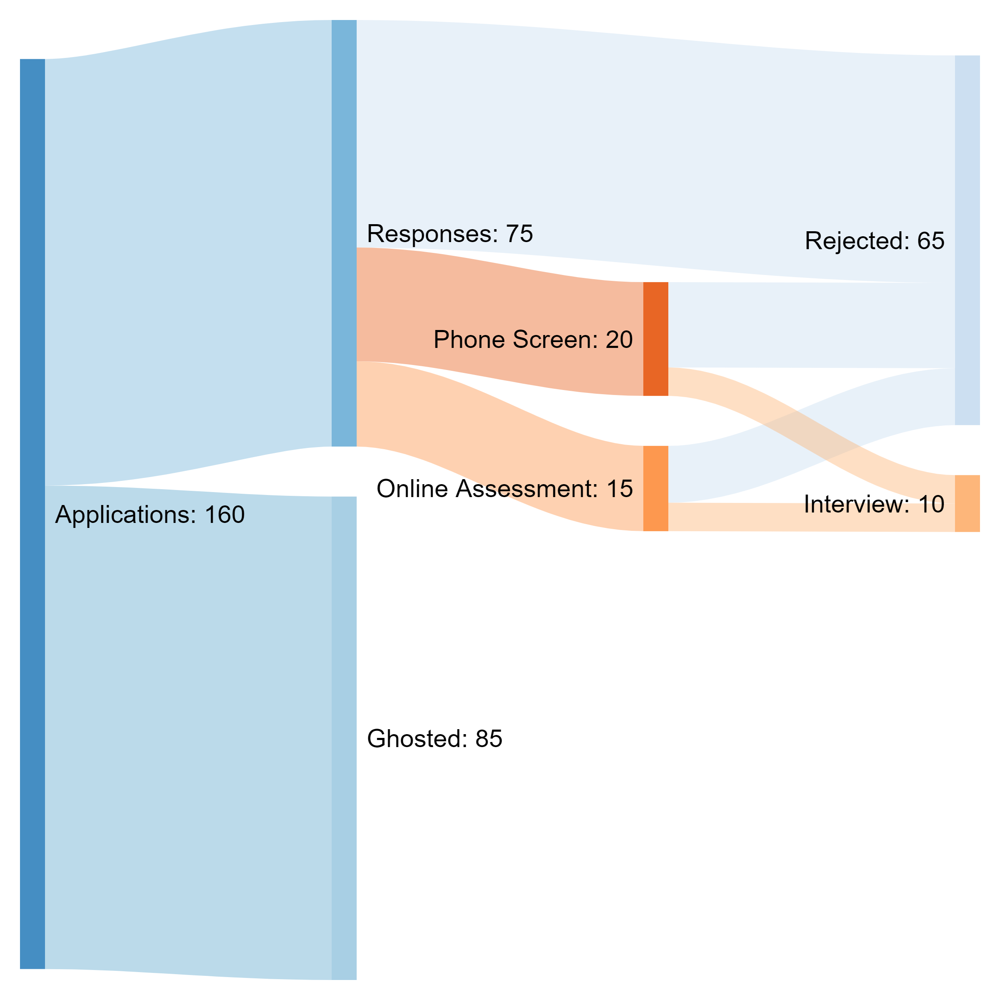

Data Visualization
- 
- 
- 
- 
Hello, this is a quick piece I decided to make to show off how my job hunting has been going. Each itteration of the graphs you will see uses the same data and is made with Python and the Matplotlib library to create them.
From this chart we do not really get a great idea of what is going on. Notice that there is no keys, nothing to really note what is going on in this diagram. Due to the nature of it being a scatter plot, the data that is represented has no bearing in any direction and is difficult for the reader to interpret.
Using a bar chart we are able to better view what has occured with my job offers. With the first section 'Application', we can denote how many applications have been sent. Following from there we can getter a better idea of what overall occured with the application process from each section describing what has occured to applications that have been sent in and viewed.
The next iteration of data visualization I thought a pi chart would be a great way to express what is occuring with the data. Using percentages instead of whole numbers to represent the amount of interviews, rejections, phone screenings, etc. allows the reader to see the success rate of my application process and how it is going as a whole. I beleieve this is beneficial for the reader sense the physical space of each section allows the reader to get a better understanding of how my application process is going versus a bar graph.
This is the last itteration of the graph and I believe to be the best representation of the data. Using this thread graph we are able to get a better understanding of how my application process has been working out. The use of space to show the sheer amount of a section along with written numbers allows us to get a full sense of how the application process has been going. While it doesn't exactly show you the precentage of each piece looking at the amount of threads that are attached to a section you can get a cursory idea of the precentage and if you wanted to dive further then you could do a simple x / y = z to figure out the exact precentage.
Thank you for taking a look at this little project. It was fun to work on! (: